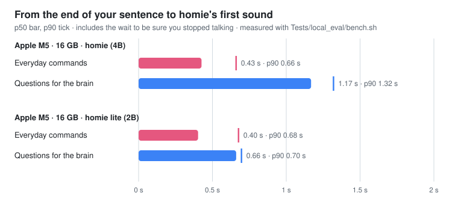

Making a 4B model feel instant on a MacBook
homie is a voice assistant that lives in the MacBook notch. You hold fn and talk; it sets timers, plays music, reads your calendar, points at things on your screen, and talks back. Everything runs on the Mac: Qwen 3.5 4B through llama.cpp on Metal for the brain, Kokoro-82M on the Neural Engine for the voice, and Apple's on-device recognizer for speech. It works in airplane mode.
The hard part wasn't getting it to work. It was getting it to feel fast. On an M5 with 16 GB, the 4B model writes about 15–30 tokens a second, and that swings 2× with memory pressure. A tool call has to be written out token by token, so just asking the model to start a timer costs 2–5 seconds. Nobody wants to wait 4 seconds for a timer.
So most of homie's speed comes from two rules: don't ask the model when you don't have to, and never make it re-read anything.

1. An instant lane that skips the model
Most of what people say to an assistant is boring: timers, dark mode, open an app, play a song, what's on my calendar. Those don't need a language model. About 600 lines of patterns catch everyday phrasings and call the tool directly in about a millisecond.
The risk with patterns is firing on the wrong thing, so the test suite has phrases that must not match: "close this window" shouldn't quit an app, and "why is dark mode bad for your eyes" is a question, not a command. On a held-out set it caught 87% before I tuned on it; it's now at 214/214 phrasings with zero wrong fires. Everything it doesn't recognize goes to the model.
Read-outs work the same way. "What's on my calendar tomorrow?" used to be a tool call plus a second model pass to summarize, 5–7 seconds. Now code reads EventKit, builds the sentence, and the voice starts in under a second.
2. Never re-read the instructions
The system prompt, tool definitions included, is about 3,700 tokens. Re-reading that on every question costs 7–19 seconds on this hardware, which kills the whole idea.
llama.cpp can save the model's state after reading a prompt. homie saves it to disk ending exactly at the user-turn marker, so every question only adds tokens: about 45 instead of 3,700. Launch-to-ready dropped from 5–10 s to 0.12 s.
This one cost me a day. The cache kept missing for no obvious reason, and it turned out the tool JSON was being serialized from a dictionary whose key order changed on every launch. Same tools, different bytes, cache miss. Sorting the keys made the prompt byte-identical across launches and the misses went away.
The same constraint killed a textbook optimization: showing the model only the tools relevant to each request. Smaller prompt, in theory faster. In practice every new tool list invalidates the cache and costs 4–17 seconds. One stable tool list wins.
3. Start before you finish talking
Deciding that someone has stopped talking is its own latency. homie waits 0.35 s after something that's clearly a complete command, 0.6 s normally, and 1.2 s after a trailing "and…".
On top of that, at 0.25 s of silence the model starts on what you've said so far. If you keep talking it throws that away and restarts, which measured as basically free (0.18–0.20 s vs 0.18–0.26 s baseline). When you have stopped, it hides about 0.35 s of the wait.
4. Talk early
The voice doesn't wait for the full answer. The first phrase is cut at a natural joint, "Did you know │ that there's a black hole…", and spoken while the model keeps writing. That took the p90 time to first sound from 1.49 s to 0.88 s. When a tool call starts streaming, homie says "On it" right away, which makes brain turns feel about 2 seconds faster.
5. Point, don't draw
Ask homie to "circle the Send button" and it does, in about half a second. The model never writes coordinates; a 4B model is bad at that. It only says what to mark. Apple's on-device text recognition and the Accessibility tree find where.
I learned this the hard way. With worked examples, asking the model to draw freehand produced a T-Rex that was a green box with a face, and it took 13–20 seconds.
What didn't work
| Tried | Result |
|---|---|
| Speculative decoding (n-gram, 2B draft) | 2.5–3.1 s vs 1.9 s baseline. Slower: rewinds are expensive on this hybrid model, and it has no MTP layers. |
| MLX instead of llama.cpp | 34 vs 31 tok/s. Not worth switching engines. |
| Per-request tool filtering | Breaks the prompt cache: +4–17 s a turn. |
| Flash attention, 4 vs 6 threads | No gain. Defaults were best. |
A remember tool | Called 1 time in 5; once it said "I'll remember that" without calling it. homie now extracts facts after the chat instead (0.2–0.7 s, idle time). |
| The 2B model with the 4B's prompt | 16/30, kept saying "Got it!" without acting. A plain-rules prompt plus a grounding check got it to 26/30; it's the automatic tier for 8 GB Macs. |
Small-model guard rails
A 4B model will occasionally do something confidently wrong, so a few checks sit around it. An action needs a matching word in what you actually said, so "tell me a joke" can no longer play a song. Tool-call text that leaks into the reply is never spoken. Invented IDs get redirected. None of these are clever, but each one removed a class of embarrassing bug.
Privacy, since everyone asks
The only network requests are the one-time model download from Hugging Face (pinned and SHA-256 checked), iTunes Search when you ask for a song, and whatever site you ask it to open. You can check the brain yourself:
lsof -nP -i -a -c llama-server # listens on 127.0.0.1 onlyhomie needs an Apple silicon Mac on macOS 26+. The code, the benchmark harness and the full experiment log are on GitHub; there's also a signed build. If you run bash Tests/local_eval/bench.sh on a different chip, I'd love your numbers.
— Saif